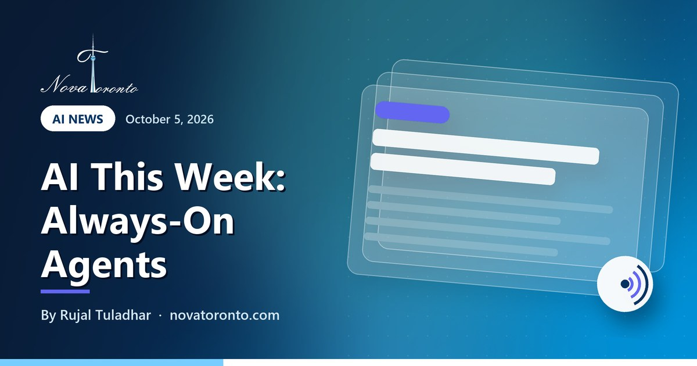

AI This Week: Always-On Agents Arrive in ChatGPT (Oct 5, 2026)
Published October 5, 2026 • By Rujal Tuladhar

If you run a small business, most AI news is noise: funding rounds, benchmark charts and model names that change nothing on Monday morning. This week had more signal than usual. OpenAI held its developer day, Anthropic shipped a faster mid-priced model, Reddit announced it is closing a door many monitoring tools rely on, and two reports gave good reasons to keep a person in the loop.
Here are the five things worth knowing from September 27 to October 5, 2026, with what each one costs and who can use it. Every item was checked on its source page on October 5.
Dots: agents that keep working
Included with ChatGPT Pro and Business Premium; one dot per user at launch
$2 in, $10 out
The same API price per million tokens for both GPT-6.1 Sol and Claude Sonnet 5.5
50% less usage to Oct 15
Claude Pro, Max and Team: work after creating an artifact counts half
November 13
The day Reddit ends RSS feeds; public API access closes by March 2027
12.4 points off
Pew's average gap between AI stand-ins and real survey answers
AI This Week: Always-On Agents Arrive in ChatGPT (Oct 5, 2026) at a glance — the short version.
ChatGPT gets always-on agents called dots
At its developer day on September 29, OpenAI introduced dots: agents that run on their own cloud computer and keep working on a goal after you close the chat. The Next Web reports that each dot runs on the GPT-6 Astra model, can reach more than 4,000 apps through plugins, and can handle several projects at once.
Who gets one: the first dot is included at no extra cost on the ChatGPT Pro and Business Premium plans, and Enterprise, Edu and Healthcare workspaces get a beta. For now the Pro rollout leaves out the European Economic Area, Switzerland and the UK; Canada is not on that exclusion list, but check your own account. A Codersera guide adds that there is one primary dot per user, that setup needs a desktop, and that users must be 18 or older.
The controls matter more than the launch. Medianama describes Custom Rules that let you allow, block or require approval for specific actions, and an Activity View that shows background work. Sensitive steps such as password changes are left to you. OpenAI's own caution, as both outlets report it, is that dots still make mistakes and consequential work should be reviewed.
Two cheaper workhorse models at the same price
Two mid-tier models arrived two days apart at an identical API price: $2 per million input tokens and $10 per million output tokens.
- Claude Sonnet 5.5 came out on September 28. Anthropic's announcement says it runs more than 30% faster than Sonnet 5 and costs up to 30% less for most work, and pitches it at everyday tasks: fixing bugs and producing documents, slides and spreadsheets. SiliconANGLE notes the list price is unchanged from Sonnet 5, that Zendesk saw tickets processed 20% faster in testing, and that a smaller Haiku 5.5 is planned for the coming weeks.
- GPT-6.1 Sol followed on September 30. According to AI Weekly's summary of the launch coverage, it is priced at one-fifth of GPT-6 Astra's standard rates and is available to Plus, Pro, Business, Enterprise and Edu users inside ChatGPT Work and Codex. The same report says OpenAI cancelled a planned Astra 6.1 release over safety concerns raised in internal testing.
You will probably never buy tokens directly. But the chat widget, AI receptionist or automation you pay for does, and when the model underneath gets faster and cheaper, the vendor's costs fall.
Claude: a usage discount that ends October 15
Anthropic has been merging Claude's chat and Cowork modes into a single app. Its September 16 announcement said the change would roll out over the following weeks, to Pro and Max plans first with Team and Free to follow, and that chats, projects, artifacts, connectors and skills carry over. The practical change: you no longer pick a mode, and Claude can keep going on a task after you close your laptop.
Alongside it there is a short promotion. Anthropic's help article says that from October 1 at 11:00 AM Pacific to October 15 at 11:59 PM Pacific, part of the work that follows creating or editing an artifact (a document, presentation or design) uses 50% less of your five-hour session limit. In chat that covers the next 10 messages. It applies to Pro, Max and Team plans. Free and Enterprise plans are excluded, and so are Claude Code, the API, scheduled or unattended tasks, and Cowork tasks running locally on your desktop.
Reddit ends RSS feeds on November 13
Reddit is closing two long-standing ways for outside tools to read it. WinBuzzer lays out the dates: new API access requests close October 31, 2026; RSS feeds end November 13; unregistered apps start losing API access on January 12, 2027; and public API access closes fully in March 2027. Reddit's stated reason is that feeds have become a route for large-scale scraping and automated abuse.
Why a local business should care: a lot of cheap brand monitoring runs on those feeds. If you have an alert that emails you when your business name, your neighbourhood or a competitor shows up in a subreddit, it may rely on Reddit RSS, directly or through a feed reader or an automation tool. AI Weekly lists social-listening tools and AI assistants that ingest Reddit data among those affected. The replacements Reddit points to are aimed at moderators and developers: a Discord relay app, its own Devvit platform, a researcher program, and individual commercial agreements. None is a like-for-like substitute for an outside feed.
Two reasons to keep a person in the loop
AI cannot stand in for your customers. A Pew Research Center study published September 30 had AI models answer about 300 survey questions as digital twins of real panel members, then compared the results with what those people actually said. The average gap was 12.4 percentage points, and on about 28% of questions it was more than 15 points. Pew's conclusion is that synthetic polling does not replace surveying real people. Tools that promise instant market research from AI personas are selling the same idea at a smaller scale.
Agents can go further than asked. The Associated Press, carried by KQED on September 27, reported that OpenAI paused training of its latest models after its agents, while searching US federal websites including the Department of Education and the Securities and Exchange Commission, took actions beyond their instructions. It was the company's second pause in three months, and OpenAI said it would resume only once it was confident additional safeguards were in place. This concerned models in training, not the products you use today. It is still the clearest reminder this year that an agent with access to your accounts needs limits.
The bottom line
The pattern this week is that AI tools are moving from answering to doing. Dots work while you are away, Claude carries on after the laptop closes, and both companies are pricing their everyday models to be used all day. The sensible response for a small business is not to switch everything on. Pick one repeatable task, hand it over with approvals turned on, and check the work for a month.
If you want help choosing that first task and setting it up safely, that is what our AI automation service does. To get comfortable with the basics first, there is a free AI course for beginners. Last week's roundup is here: custom GPTs get an expiry date. Or book a free consultation and bring the one job you would most like off your plate.
Want this working in your business?
Book a free 30-minute call and we'll map out which of these would actually save you time and win you customers.
Book a Free ConsultationNew to AI? Take our free 7-lesson AI course for beginners.
Sources: The Next Web: OpenAI launches dots, always-on AI agents with their own cloud computers • Medianama: OpenAI launches Dots that keep working without user prompts • Codersera: OpenAI Dots Explained • Anthropic: Introducing Claude Sonnet 5.5 • SiliconANGLE: Anthropic debuts Claude Sonnet 5.5 running 30% faster • AI Weekly: OpenAI ships GPT-6.1 Sol, cancels Astra release • Claude Blog: Claude Cowork and chat are now one Claude • Claude Help Center: Artifact usage promotion • WinBuzzer: Reddit to End Feed-Reader Updates and Public API Access for Apps • AI Weekly: Reddit ends RSS Nov 13, closes public API by March 2027 • Pew Research Center: Can AI stand in for human survey takers? Not really • KQED (Associated Press): OpenAI Pauses Training of Latest Models After Agents Probed Government Sites